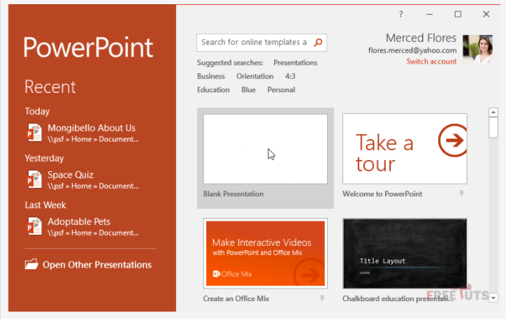

- Trang chủ
- Giới thiệu
-
Khóa học
MS Powerpoint 2016
Phần 1: Làm quen với Powerpoint 2016
Khi bạn mở PowerPoint lần đầu thì sẽ xuất hiện một màn hình hướng dẫn cơ bản. Tại đây bạn sẽ thấy một số tính năng như tạo mới một trang, hoặc mở những file mà bạn đã lưu trước đó nếu có. Màn này này ta gọi là màn hình Start Screen. Tại đây bạn hãy click vào Blank Presentation để tạo một file PowerPoint mới.

Một cửa sổ mới xuất hiện. Đây chính là giao diện làm việc của bạn. Phía bên tay trái là danh sách các slides, và phía bên tay phải là chi tiết của từng slide. Bạn hãy thử click vào từng slide bên tay trái để cảm nhận.
Các thành công cụ trên Power Point 2016
Môi trường làm việc của PowerPoint chủ yếu là thao tác với các thanh công cụ, vì vậy khi bạn hiểu rõ các tính năng thì sẽ rất dễ dàng lam viêc. Bên cành đó cũng giúp bạn đỡ bỡ ngỡ khi học các phiên bản cao hơn.
Hệ thống Ribbon
Không giống như các phiên bản từ 2017 trở về trước. Từ phiên bản 2010 trở đi PowerPoint sư dụng Ribbon để gom nhóm những chức năng giống nhau lai. Điều này tạo ra một hệ thống Ribbon.
Ví dụ: Như hình ảnh dưới đây mình đã gộp những chức năng liên quan đến text thành một ribbon.Trên đây là những kiến thức cơ bản về khóa học excle 2016. Chúc bạn học tốt!
Ẩn hiện Ribbon
Để ẩn hoặc hiện các ribbon thì bạn thực hiện như sau: Click vào dấu mũi tên nhỏ ở góc trên phải của màn hình. Tại đây sẽ có 3 sự lựa chọn cho bạn.
- Auto-hide Ribbon: Tự động ẩn/hiển thị sổ làm việc của bạn ở chế độ toàn màn hình và ẩn hoàn toàn Ribbon. Để hiển thị Ribbon, nhấp vào lệnh Expand Ribbon ở đầu màn hình.
- Show Tabs: Tùy chọn này ẩn tất cả các nhóm lệnh khi chúng không được sử dụng, nhưng các tab sẽ vẫn hiển thị. Để hiển thị Ribbon, chỉ cần nhấp vào tab.
- Show Tabs and Commands: Tùy chọn này sẽ phóng to toàn bộ Ribbon. Tất cả các tab và lệnh sẽ hiển thị. Tùy chọn này được chọn theo mặc định khi bạn mở PowerPoint lần đầu tiên.
Tính năng search - tell me
Tính năng này không khác gì một thanh search cả. Nếu bạn thắc mắc gì thì có thể nhập vào thanh này và nó sẽ hiển thị những công cụ cho bạn. Lưu ý là nó chỉ hoạt động với tiếng Anh.
Quick Access Toolbar trong Word 2016
Quick Access Toolbar là chức năng tìm công cụ nhanh. Nó nằm ngay góc trái trên cùng của cửa sổ làm việc. Theo mặc định nó chỉ có 4 lệnh đó là:
- Save
- Undo
- Redo
- Start From Beginning
Nhưng bạn có thể thêm lệnh dễ dàng bằng cách sau:
Bước 1: Click vào mũi tên góc trái trên cùng để mở thành Quick Access.
Bước 2: Chọn lệnh mà bạn muốn thêm vào thanh này.
Giả sử mình chọn lệnh Quick Print thì giao diện lúc này sẽ như sau:

Video giới thiệu chi tiết
Phần 2: Thao tác cơ bản trong Powerpoint
Bài này chúng ta sẽ tìm hiểu một số thao tác cơ bản để tạo Slide trình chiếu cho bài thuyết trình của chúng ta dựa trên những nội dung chúng ta cần trình bày.
Các bạn xem video hướng dẫn dưới đây:
Phần 3: Giao diện và biểu mẫu Slide
Bài này chúng ta sẽ biết được cách sử dụng giao diện sẵn có của Slide mà Microsoft cung cấp để giúp chúng ta tạo được những mẫu Slide thật sự ấn tượng, thu hút người xem.
Các bạn xem video hướng dẫn dưới đây:
Phần 4: Thêm văn bản vào Slide
Bài này chúng ta sẽ bắt đầu thêm những nội dung văn bản vào Slide.
Các bạn xem video hướng dẫn dưới đây:
Phần 5: Bảng biểu và Đồ thị
Bài này chúng ta sẽ biết được cách thêm các Bảng và Biểu đồ vào bài thuyết trình của chúng ta. Những nội dung này sẽ giúp người xem hình dung ra được nội dung chúng ta đang trình bày.
Các bạn xem video hướng dẫn dưới đây:
Phần 6: Các Đối tượng Đồ họa
Bài này các bạn sẽ biết cách thêm vào các hình ảnh, các đối tượng đồ họa để diễn đạt ý tưởng cho bài thuyết trình cho chúng ta. Nó cũng góp phần làm cho bài thuyết trình ấn tượng hơn.
Các bạn xem video hướng dẫn dưới đây:
Phần 7: Video, Hình ảnh và Âm thanh
Bài này chúng ta sẽ biết cách sử dụng Hình ảnh, Video và Âm thanh vào bài thuyết trình của chúng ta trên Power Point 2016.
Các bạn xem video hướng dẫn dưới đây:
Phần 8: Tạo CHUYỂN ĐỘNG và HIỆU ỨNG
Bài này chúng ta sẽ biết được cách TẠO CHUYỂN ĐỘNG và HIỆU ỨNG cho SLIDE và các ĐỐI TƯỢNG của SLIDE nhắm tạo bài thuyết trình thật ấn tượng trong Power Point 2016.
Các bạn xem video hướng dẫn dưới đây:
Phần 9: Quản lý SLIDE bằng SLIDE SORTER
Bài này các bạn sẽ biết được cách tổ chức, sắp xếp các SLIDE bằng SLIDE SORTER của POWER POINT 2016.
Các bạn xem video hướng dẫn dưới đây:
Trên đây là những kiến thức cơ bản về khóa học excle 2016. Chúc bạn học tốt!